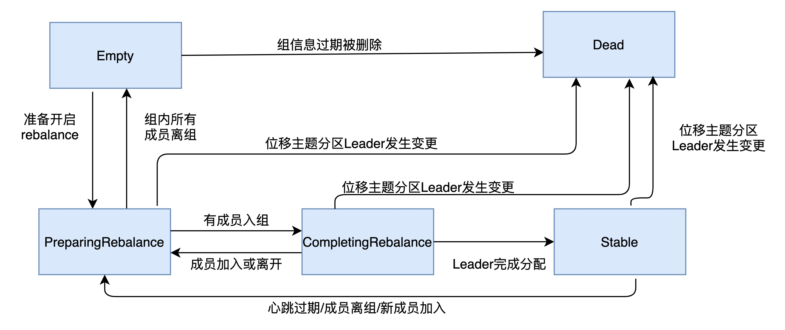
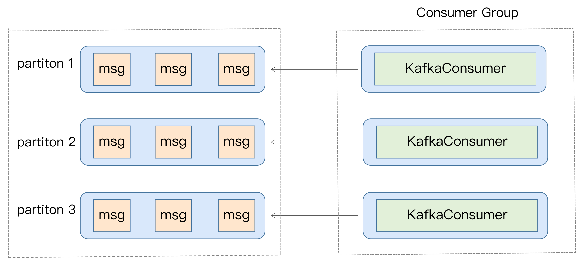

消费者组
Consumer Group 是 Kafka 提供的可扩展且具有容错性的消费者机制。
- Consumer Group 下可以有一个或多个 Consumer 实例。
- Group ID 是一个字符串，在一个 Kafka 集群中，它标识唯一的一个 Consumer Group。
- 单个分区只能分配给组内的某个 Consumer 实例消费。这个分区当然也可以被其他的 Group 消费。
- 理想情况下，Consumer 实例的数量应该等于该 Group 订阅主题的分区总数
重平衡
Rebalance 本质上是一种协议，规定了一个 Consumer Group 下的所有 Consumer 如何达成一致，来分配订阅 Topic 的每个分区。
协调者（Coordinator），负责为 Group 执行 Rebalance 以及提供位移管理和组成员管理等。所有 Broker 都会在启动时，创建和开启各自的 Coordinator 组件。
Consumer Group 确定 Coordinator 所在的 Broker
第 1 步：确定由位移主题的哪个分区来保存该 Group 数据：partitionId=Math.abs(groupId.hashCode() % offsetsTopicPartitionCount)。
第 2 步：找出该分区 Leader 副本所在的 Broker，该 Broker 即为对应的 Coordinator。
注： Java Consumer API，能够自动发现并连接正确的 Coordinator。
Rebalance 触发条件
- 组成员数发生变更。比如有新的 Consumer 实例加入组或者离开组，抑或是有 Consumer 实例崩溃被“踢出”组。
- 订阅主题数发生变更。
- 订阅主题的分区数发生变更。
重平衡的通知
通过心跳线程来完成。
- 0.10.1.0 版本之前，发送心跳请求是在消费者主线程完成的，即调用
KafkaConsumer.poll方法的线程。 - 0.10.1.0 版本开始，社区引入了一个单独的心跳线程来专门执行心跳请求发送，避免了消费过长的“假死”触发重平衡。
Rebalance影响
1、stop the world，所有 Consumer 实例都会停止消费，等待 Rebalance 完成
2、Rebalance 效率不高，需要重新分配所有分区
3、Rebalance很慢
消费者组状态机


消费者端重平衡流程
- 加入组
向协调者发送 JoinGroup 请求，上报订阅的主题。通常情况下，第一个发送 JoinGroup 请求的成员自动成为领导者。领导者消费者的任务是收集所有成员的订阅信息，然后根据这些信息，制定具体的分区消费分配方案。
协调者会把消费者组订阅信息封装进 JoinGroup 请求的响应体中，然后发给领导者。
- 等待领导者消费者（Leader Consumer）分配方案
领导者统一做出分配方案，向协调者发送 SyncGroup 请求，将刚刚做出的分配方案发给协调者。
其他成员也会向协调者发送 SyncGroup 请求.
协调者统一以 SyncGroup 响应的方式分发给所有成员，这样组内所有成员就都知道自己该消费哪些分区了。
Broker端重平衡流程
场景一：新成员入组

场景二：组成员主动离组。

场景三：组成员崩溃离组

避免 Rebalance
主要方法：避免组成员数发生减少的情况。
Consumer 实例都会定期地向 Coordinator 发送心跳请求，表明它还存活着。session.timeout.ms+ heartbeat.interval.ms
Consumer 端应用程序两次调用poll 方法的最大时间间隔。默认值是 5 分钟，Consumer 程序如果在 5 分钟之内无法消费完 poll 方法返回的消息，那么 Consumer 会主动发起“离开组”的请求，Coordinator 也会开启新一轮 Rebalance。max.poll.interval.ms
位移主题
当 Kafka 集群中的第一个 Consumer 程序启动时，Kafka 会自动创建位移主题。自动创建的位移主题分区数是offsets.topic.num.partitions 50，副本数是offsets.topic.replication.factor 3。
1、将 Consumer 的位移数据作为一条普通的 Kafka 消息，保存到内部主题 __consumer_offsets中。
位移主题消息的 Key 中格式：<Group ID，主题名，分区号 >，消息体保存了位移值和位移提交的元数据，诸如时间戳和用户自定义的数据等。
2、保存 Consumer Group 相关信息的消息
3、用于删除 Group 过期位移、删除 Group 的消息。tombstone 消息，即墓碑消息
消费位移
记录了 Consumer 要消费的下一条消息的位移。Consumer 需要为分配给它的每个分区提交各自的位移数据。提交位移主要是为了表征 Consumer 的消费进度。
提交位移的配置：enable.auto.commit + auto.commit.interval.ms控制。
自动提交位移
Kafka 会保证在开始调用
poll方法时，提交上次poll返回的所有消息。从顺序上来说，
poll方法的逻辑是先提交上一批消息的位移，再处理下一批消息，因此它能保证不出现消费丢失的情况。问题：重平衡出现时可能会出现重复消费
Properties props = new Properties();
props.put("bootstrap.servers", "localhost:9092");
props.put("group.id", "test");
props.put("enable.auto.commit", "true");
props.put("auto.commit.interval.ms", "2000");
props.put("key.deserializer", "org.apache.kafka.common.serialization.StringDeserializer");
props.put("value.deserializer", "org.apache.kafka.common.serialization.StringDeserializer");
KafkaConsumer<String, String> consumer = new KafkaConsumer<>(props);
consumer.subscribe(Arrays.asList("foo", "bar"));
while (true) {
ConsumerRecords<String, String> records = consumer.poll(100);
for (ConsumerRecord<String, String> record : records)
System.out.printf("offset = %d, key = %s, value = %s%n",
record.offset(), record.key(), record.value());
}手动提交位移
手动提交，需要将 commitSync 和 commitAsync 组合使用。
commitSync()会提交 poll()返回的最新位移。该方法会一直等待，直到位移被成功提交才会返回。
缺陷：调用 commitSync()时，Consumer 程序会处于阻塞状态，直到远端的 Broker 返回提交结果，阻塞才会结束，影响整个应用程序的 TPS。
while (true) {
ConsumerRecords<String, String> records =
consumer.poll(Duration.ofSeconds(1));
process(records); // 处理消息
try {
consumer.commitSync();
} catch (CommitFailedException e) {
handle(e); // 处理提交失败异常
}
}commitAsync()，立即返回，不会阻塞，因此不会影响 Consumer 应用的 TPS。Kafka 提供了回调函数callback，供你实现提交之后的逻辑，比如记录日志或处理异常等。
缺陷：出现问题时它不会自动重试。因为它是异步操作，倘若提交失败后自动重试，那么它重试时提交的位移值可能早已经“过期”或不是最新值了。
try {
while(true) {
ConsumerRecords<String, String> records =
consumer.poll(Duration.ofSeconds(1));
process(records); // 处理消息
commitAysnc(); // 使用异步提交规避阻塞
}
} catch(Exception e) {
handle(e); // 处理异常
} finally {
try {
consumer.commitSync(); // 最后一次提交使用同步阻塞式提交
} finally {
consumer.close();
}
}commitSync(Map<TopicPartition, OffsetAndMetadata>)和 commitAsync(Map<TopicPartition, OffsetAndMetadata>)。它们的参数是一个 Map 对象，键就是 TopicPartition，即消费的分区，而值是一个 OffsetAndMetadata 对象，保存位移数据。
private Map<TopicPartition, OffsetAndMetadata> offsets = new HashMap<>();
int count = 0;
……
while (true) {
ConsumerRecords<String, String> records =
consumer.poll(Duration.ofSeconds(1));
for (ConsumerRecord<String, String> record: records) {
process(record); // 处理消息
offsets.put(new TopicPartition(record.topic(), record.partition()),
new OffsetAndMetadata(record.offset() + 1)；
if（count % 100 == 0）
consumer.commitAsync(offsets, null); // 回调处理逻辑是null
count++;
}
}CommitFailedException
提交位移时出现了不可恢复的严重异常。原因一般是消费者组已经开启了 Rebalance 过程，并且将要提交位移的分区分配给了另一个消费者实例
解决
- 缩短单条消息处理的时间
- 增加 Consumer 端允许下游系统消费一批消息的最大时长
max.poll.interval.ms - 减少下游系统一次性消费的消息总数
max.poll.records - 下游系统使用多线程来加速消费
过期消息删除
kafka 使用 Compact 策略来删除位移主题中的过期消息。
Kafka 提供了专门的后台线程（Log Cleaner）定期地巡检待 Compact 的主题，看看是否存在满足条件的可删除数据。
对于同一个 Key 的两条消息 M1 和 M2，如果 M1 的发送时间早于 M2，那么 M1 就是过期消息。Compact 的过程就是扫描日志的所有消息，剔除那些过期的消息，然后把剩下的消息整理在一起。
重设消费者组位移
由于kafka是基于日志结构（log-based）的消息引擎，消费者在消费消息时，仅仅是从磁盘文件上读取数据而已，消费者不会删除消息数据。
重设位移策略

重设方式
通过消费者 API 来实现。
Properties consumerProperties = new Properties();
consumerProperties.put(ConsumerConfig.ENABLE_AUTO_COMMIT_CONFIG, false); //禁止自动提交位移
consumerProperties.put(ConsumerConfig.GROUP_ID_CONFIG, groupID);
consumerProperties.put(ConsumerConfig.AUTO_OFFSET_RESET_CONFIG, "earliest");
consumerProperties.put(ConsumerConfig.KEY_DESERIALIZER_CLASS_CONFIG, StringDeserializer.class.getName());
consumerProperties.put(ConsumerConfig.VALUE_DESERIALIZER_CLASS_CONFIG, StringDeserializer.class.getName());
consumerProperties.put(ConsumerConfig.BOOTSTRAP_SERVERS_CONFIG, brokerList);
String topic = "test"; // 要重设位移的Kafka主题
try (final KafkaConsumer<String, String> consumer = new KafkaConsumer<>(consumerProperties)) {
consumer.subscribe(Collections.singleton(topic));
consumer.poll(0);
consumer.seekToBeginning(
consumer.partitionsFor(topic).stream().map(
partitionInfo -> new TopicPartition(topic, partitionInfo.partition())
).collect(Collectors.toList()));// 需要一次性构造主题的所有分区对象
}
// Current
consumer.partitionsFor(topic).stream().map(
info -> new TopicPartition(topic, info.partition())
).forEach(tp -> {
long committedOffset = consumer.committed(tp).offset();
consumer.seek(tp, committedOffset);
});
//Specified-Offset
long targetOffset = 1234L;
for (PartitionInfo info : consumer.partitionsFor(topic)) {
TopicPartition tp = new TopicPartition(topic, info.partition());
consumer.seek(tp, targetOffset);
}
//Shift-By-N
for (PartitionInfo info : consumer.partitionsFor(topic)) {
TopicPartition tp = new TopicPartition(topic, info.partition());
// 假设向前跳123条消息
long targetOffset = consumer.committed(tp).offset() + 123L;
consumer.seek(tp, targetOffset);
}
//DateTime
long ts = LocalDateTime.of(2019, 6, 20, 20, 0).toInstant(ZoneOffset.ofHours(8)).toEpochMilli();
Map<TopicPartition, Long> timeToSearch =
consumer.partitionsFor(topic).stream().map(info ->
new TopicPartition(topic, info.partition()))
.collect(Collectors.toMap(Function.identity(), tp -> ts));
for (Map.Entry<TopicPartition, OffsetAndTimestamp> entry :
consumer.offsetsForTimes(timeToSearch).entrySet()) {
consumer.seek(entry.getKey(), entry.getValue().offset());
}
//Duration
Map<TopicPartition, Long> timeToSearch = consumer.partitionsFor(topic).stream()
.map(info -> new TopicPartition(topic, info.partition()))
.collect(Collectors.toMap(Function.identity(), tp -> System.currentTimeMillis() - 30 * 1000 * 60));
for (Map.Entry<TopicPartition, OffsetAndTimestamp> entry :
consumer.offsetsForTimes(timeToSearch).entrySet()) {
consumer.seek(entry.getKey(), entry.getValue().offset());
}通过 kafka-consumer-groups 命令行脚本来实现
# to-earliest
bin/kafka-consumer-groups.sh --bootstrap-server kafka-host:port --group test-group --reset-offsets --all-topics --to-earliest –execute
# Latest
bin/kafka-consumer-groups.sh --bootstrap-server kafka-host:port --group test-group --reset-offsets --all-topics --to-latest --execute
bin/kafka-consumer-groups.sh --bootstrap-server kafka-host:port --group test-group --reset-offsets --all-topics --to-current --execute
bin/kafka-consumer-groups.sh --bootstrap-server kafka-host:port --group test-group --reset-offsets --all-topics --to-offset --execute
bin/kafka-consumer-groups.sh --bootstrap-server kafka-host:port --group test-group --reset-offsets --shift-by --execute
bin/kafka-consumer-groups.sh --bootstrap-server kafka-host:port --group test-group --reset-offsets --to-datetime 2019-06-20T20:00:00.000 --execute
bin/kafka-consumer-groups.sh --bootstrap-server kafka-host:port --group test-group --reset-offsets --by-duration PT0H30M0S --execute 独立消费者
每个消费者实例都是独立工作的，彼此之间毫无联系。
KafkaConsumer
用户主线程，启动 Consumer 应用程序 main 方法的那个线程。
心跳线程（Heartbeat Thread）只负责定期给对应的 Broker 机器发送心跳请求，以标识消费者应用的存活性（liveness）
多线程方案
KafkaConsumer 类不是线程安全的 （thread-safe），不能在多个线程中共享同一个 KafkaConsumer 实例，否则程序会抛出 ConcurrentModificationException异常
1.消费者程序启动多个线程，每个线程维护专属的 KafkaConsumer 实例，负责完整的消息获取、消息处理流程

public class KafkaConsumerRunner implements Runnable {
private final AtomicBoolean closed = new AtomicBoolean(false);
private final KafkaConsumer consumer;
public void run() {
try {
consumer.subscribe(Arrays.asList("topic"));
while (!closed.get()) {
ConsumerRecords records =
consumer.poll(Duration.ofMillis(10000));
// 执行消息处理逻辑
}
} catch (WakeupException e) {
// Ignore exception if closing
if (!closed.get()) throw e;
} finally {
consumer.close();
}
}
// Shutdown hook which can be called from a separate thread
public void shutdown() {
closed.set(true);
consumer.wakeup();
}
}2.消费者程序使用单或多线程获取消息，同时创建多个消费线程执行消息处理逻辑。

private final KafkaConsumer<String, String> consumer;
private ExecutorService executors;
...
private int workerNum = ...;
executors = new ThreadPoolExecutor(
workerNum,
workerNum,
0L,
TimeUnit.MILLISECONDS,
new ArrayBlockingQueue<>(1000),
new ThreadPoolExecutor.CallerRunsPolicy()
);
...
while (true) {
ConsumerRecords<String, String> records = consumer.poll(Duration.ofSeconds(1));
for (final ConsumerRecord record : records) {
executors.submit(new Worker(record));
}
}
..方案比较

TCP 连接
TCP 连接是在调用 KafkaConsumer.poll方法时被创建的。
1.发起 FindCoordinator 请求时。
当消费者程序首次启动调用 poll方法时，它需要向 Kafka 集群发送一个名为 FindCoordinator 的请求，希望 Kafka 集群告诉它哪个 Broker 是管理它的协调者。
2.连接协调者时。
消费者知晓了真正的协调者后，会创建连向该 Broker 的 Socket 连接。只有成功连入协调者，协调者才能开启正常的组协调操作，比如加入组、等待组分配方案、心跳请求处理、位移获取、位移提交等。
3.消费数据时。
消费者会为每个要消费的分区创建与该分区领导者副本所在 Broker 连接的 TCP
消费者关闭 Socket 也分为主动关闭和 Kafka 自动关闭。
1、手动调用KafkaConsumer.close()方法，或者是执行 Kill 命令
2、Kafka 自动关闭是由消费者端参数 connection.max.idle.ms 控制的，默认值是 9 分钟
注：当第三类 TCP 连接成功创建后，消费者程序就会废弃第一类 TCP 连接，之后在定期请求元数据时，它会改为使用第三类 TCP 连接。第一类 TCP 连接会在后台被默默地关闭掉。对一个运行了一段时间的消费者程序来说，只会有后面两类 TCP 连接存在。
消费进度
消费者 Lag 或 Consumer Lag，消费者当前落后于生产者的程度，即在某主题上，Kafka 生产者生产消息和消费消息的差。
监控方法
1、使用 Kafka 自带的命令行工具 ·kafka-consumer-groups ·脚本。
# Kafka 连接信息就是 < 主机名：端口 > 对，而 group 名称就是消费者程序中设置的 group.id 值.
$ bin/kafka-consumer-groups.sh --bootstrap-server --describe --group 
2、使用 Kafka Java Consumer API 编程。
public static Map<TopicPartition, Long> lagOf(String groupID, String bootstrapServers) throws TimeoutException {
Properties props = new Properties();
props.put(CommonClientConfigs.BOOTSTRAP_SERVERS_CONFIG, bootstrapServers);
try (AdminClient client = AdminClient.create(props)) {
ListConsumerGroupOffsetsResult result = client.listConsumerGroupOffsets(groupID);
try {
//获取订阅分区的最新消息位移
Map<TopicPartition, OffsetAndMetadata> consumedOffsets =
result.partitionsToOffsetAndMetadata().get(10, TimeUnit.SECONDS);
props.put(ConsumerConfig.ENABLE_AUTO_COMMIT_CONFIG, false); // 禁止自动提交位移
props.put(ConsumerConfig.GROUP_ID_CONFIG, groupID);
props.put(ConsumerConfig.KEY_DESERIALIZER_CLASS_CONFIG, StringDeserializer.class.getName());
props.put(ConsumerConfig.VALUE_DESERIALIZER_CLASS_CONFIG, StringDeserializer.class.getName());
try (final KafkaConsumer<String, String> consumer = new KafkaConsumer<>(props)) {
//最新消费消息的位移
Map<TopicPartition, Long> endOffsets = consumer.endOffsets(consumedOffsets.keySet());
return endOffsets.entrySet().stream().collect(Collectors.toMap(
entry -> entry.getKey(),
entry -> entry.getValue() - consumedOffsets.get(entry.getKey()).offset()));
}
} catch (InterruptedException e) {
Thread.currentThread().interrupt();
// 处理中断异常
// ...
return Collections.emptyMap();
} catch (ExecutionException e) {
// 处理ExecutionException
// ...
return Collections.emptyMap();
} catch (TimeoutException e) {
throw new TimeoutException("Timed out when getting lag for consumer group " + groupID);
}
}
}3、使用 Kafka 自带的 JMX 监控指标。
Kafka 消费者的JMX 指标 kafka.consumer:type=consumer-fetch-manager-metrics,client-id=“{client-id}”，其中：records-lag-max 和 records-lead-min，分别表示此消费者在测试窗口时间内曾经达到的最大的 Lag 值和最小的 Lead 值。
Lead 值是指消费者最新消费消息的位移与分区当前第一条消息位移的差值。Lag 越大的话，Lead 就越小。
一旦 Lead 越来越小，甚至快接近于 0 了，预示着消费者端要丢消息了。
Kafka 消费者还在分区级别提供了 JMX 指标，用于监控分区级别的 Lag 和 Lead 值。JMX 名称为：kafka.consumer:type=consumer-fetch-manager-metrics,partition=“{partition}”,topic=“{topic}”,client-id=“{client-id}”